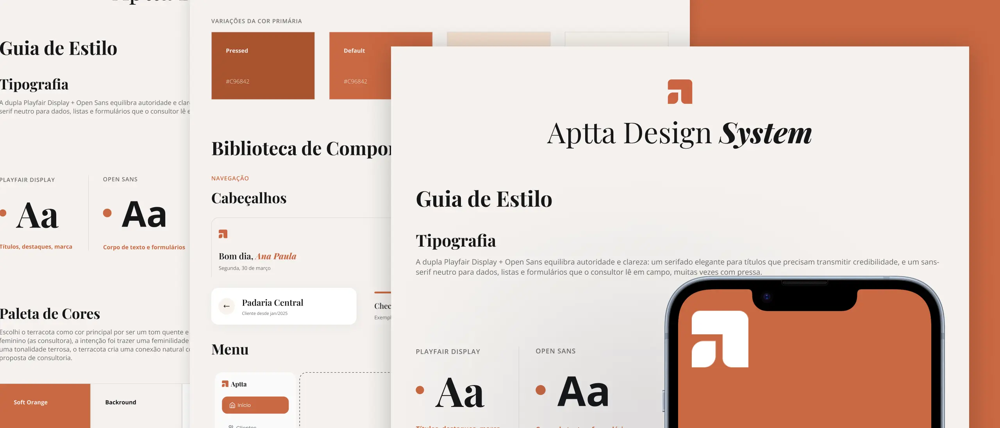
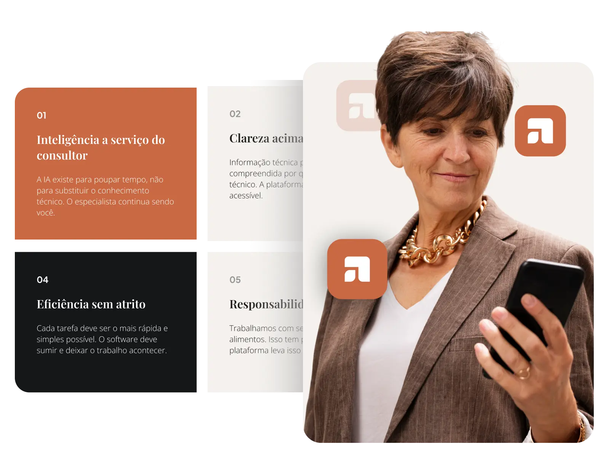
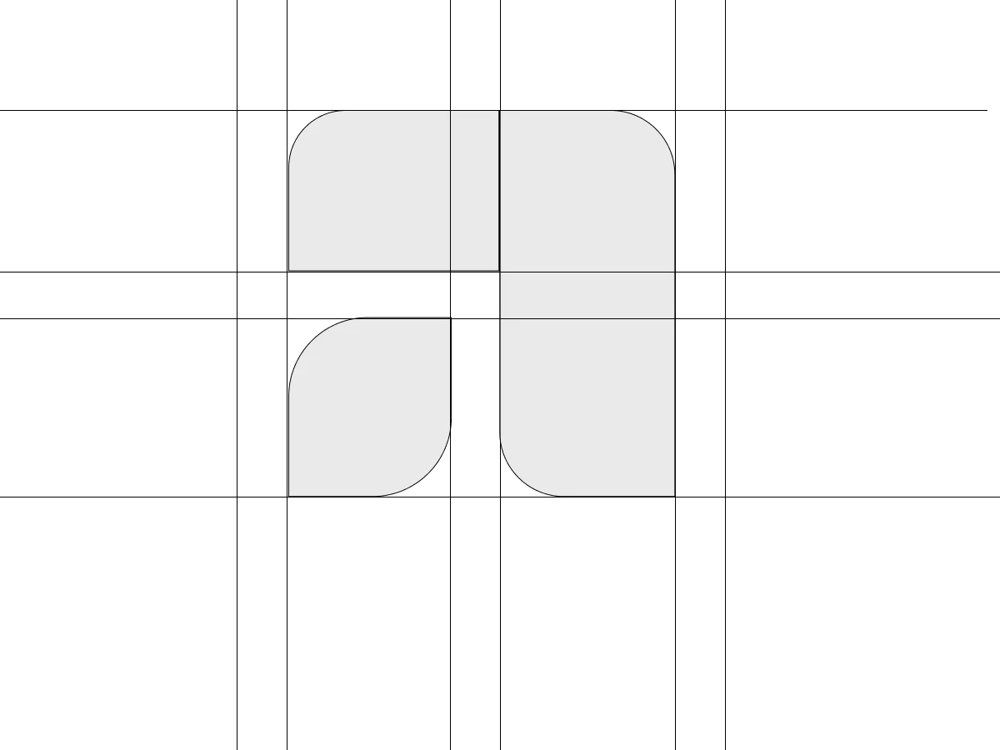
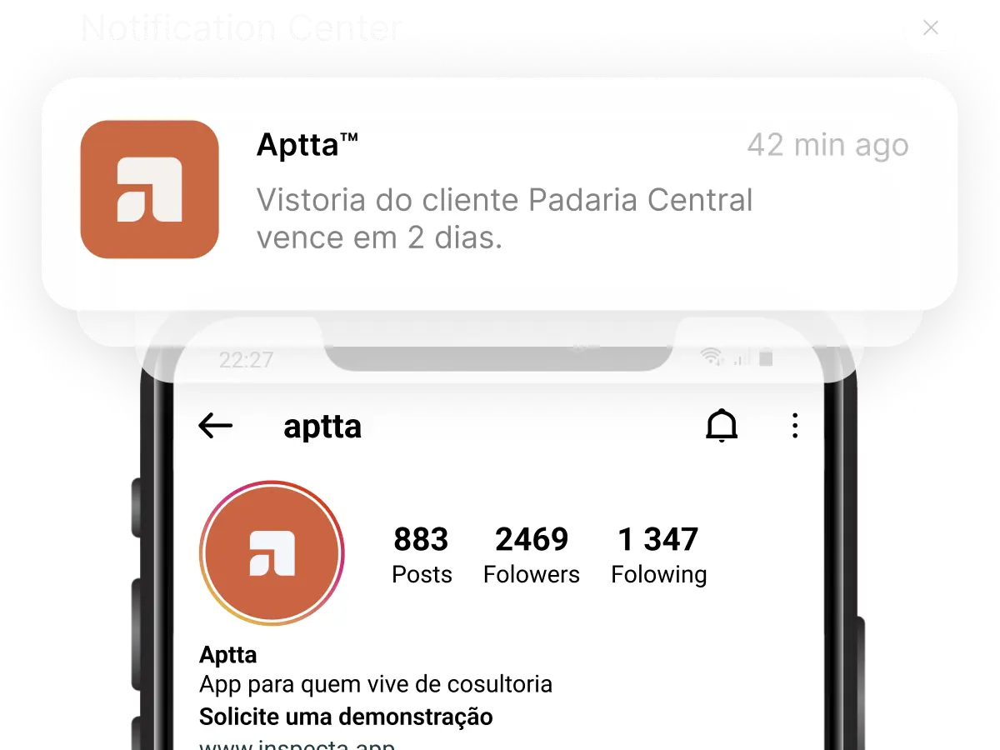
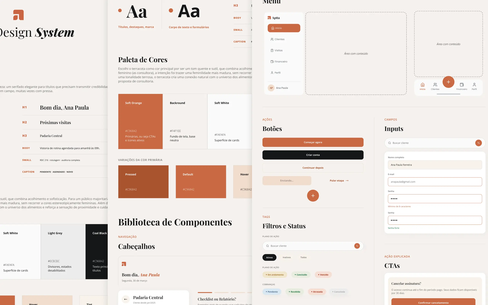

Aptta
A Aptta é uma plataforma digital para nutricionistas. Quando entrei no projeto, não havia marca, identidade visual ou estrutura definida. O desafio era construir isso do zero, junto com o produto.
Antes do visual, o posicionamento
Comecei com pesquisa: quem é o público, quais suas necessidades e o que sentem em relação ao produto. A partir desses insights, defini o posicionamento da marca: personalidade, comunicação e a percepção que a Appta precisava transmitir.
Esse processo virou um documento de posicionamento, usado como base para todas as decisões visuais e de produto que vieram depois.

Um símbolo com dois significados
A partir do posicionamento aprovado, explorei diferentes propostas até chegar à identidade final. O símbolo nasce da letra "a", ao mesmo tempo uma referência à análise e organização de dados da plataforma e à folha, conectando a marca ao universo da nutrição.


Uma base para escalar o produto
Com a identidade definida, estruturei o Design System da Appta: tipografia, cores, botões, inputs, navegação, estados de componentes e uma biblioteca reutilizável, pensada para acelerar a construção das próximas telas e manter consistência entre elas.

Da estratégia de marca à experiência do produto
Com a marca, identidade e Design System estabelecidos, o projeto segue agora para a construção das telas e fluxos da plataforma, aplicando os padrões definidos ao longo do produto.
Próximo projeto Getsnack